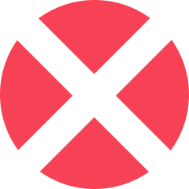

Hvernig leikurinn var búinn til
Project A
Valorant var búinn til af Riot Games, sama fyrirtæki og gerði League of Legends. Á meðan leikurinn var að vera búinn til hét hann „Project A“ og var sýndur fyrst í október 2019.
Hugmyndin
Valorant er mjög innbllásinn af Counter-Strike og notar nokkra hluti frá Counter-Strike eins og buy menu'ið, spray patterns og að maður hittir verr þegar maður er að hreyfa sig. Það sem gerir Valorant öðruvísi er að hver agent er með sín eigin abilities, eins og í Ocerwatch.
Útgáfa
Leikurinn fór í closed beta í apríl 2020 og kom svo formlega út 2. júní 2020. Hann er free to play og er búinn til í Unreal Engine.
Roles

Duelist
Duelist er role sem fer fyrstur inn á site'ið til að entrya fyrir liðið sitt og ná að drepa andstæðingana á site. ef duelisti'inn deyr inn á site þá ætti liðið hanns að vera fyrir aftan hann og ná að trade'a hann af.
Initiator
Initior role'ið hjálpar liðinu að komast inn á site'ið með því að nota util, t.d. reaveal, stun og flash, áður en að liðið byrjar að pusha inn á site'ið.
Controller
Controller roli'ið notar smokes svo að andsræðingarnir sjái ekki. Þegar liðið er að defenda smoka þeir þar sem andstæðingarnir gætu komist inn á site'ið og þegar liðið er að attacka smoka þeir staðina sem andstæðingarnir geta peekað þá á meðan liðið pushar inn.
Sentinel
Sentinal role'ið verndar site'ið með fullt af trips eða gildrum. Þegar liðið er að attacka þá passar sentinal flank með því að setja trips og lurkar oft á meðan liðið pushar inn á site'ið.